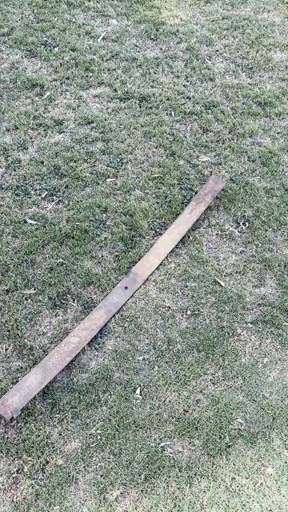
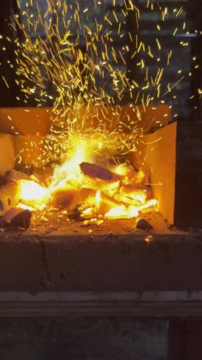
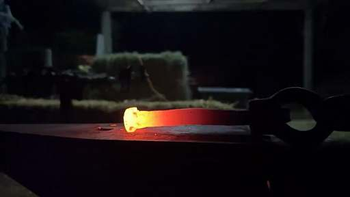
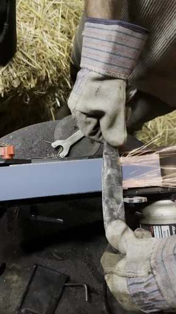
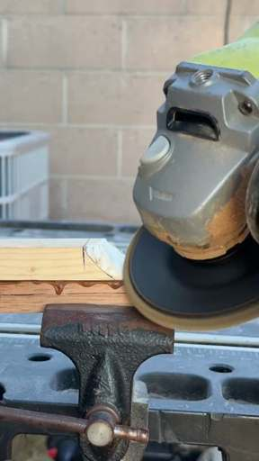
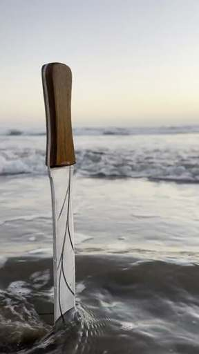

The forging process
Raw stock to finished edge
Six stages, in the order they happen. The order carries the meaning — nothing here can be done out of turn.
-

Step one
Raw stock
It starts as a bar of high-carbon steel. Nothing about it suggests a blade yet. The size of the bar decides what can be made from it, so that choice comes first.
-

Step two
Heat
The forge brings the steel to an even orange. Colour is the gauge that matters: too cold and it will crack under the hammer, too hot and the grain coarsens and the steel is spoiled.
-

Step three
Shaping
Hammer work. The bar is drawn out, the bevels started, the tang set. This is where the blade takes its shape and where most of the hours go. It goes back in the fire every time it loses its colour.
-

Step four
Grinding
Once the shape is right the blade is normalised, hardened and tempered, then ground. Grinding takes the rough forged surface down to clean, even bevels. It is slow, and it cannot be undone.
-

Step five
Handle
Wood, horn or leather, fitted to the tang and shaped to the hand that will hold it. On a commission this is the part that gets discussed most, because it is the part you feel.
-

Step six
Finished edge
The edge is brought up by hand on stones, then stropped. A blade is finished when it will do the work it was made for, and not before.
If you want something made, tell me what you have in mind.
Send an inquiry